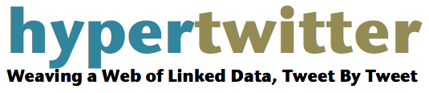

http://semantictwitter.appspot.com
Developed by Martin Hepp, E-Business & Web Science Research Group, Universität der Bundeswehr München.
The Twitter API currently blocks all requests from applications running in the Google App Engine cloud, unless they authorize themselves.
HyperTwitter can thus no longer access your tweets and needs a code update to handle that properly, which is planned. However, it may take me a few weeks to get this done.
If you have any questions, please e-mail to mheppATcomputerDOTorg.
HyperTwitter allows users to consolidate or relate pairs of
by a simple yet powerful syntax. For example, users can easily state that two hashtags mean the same.
#muenchen = #munich
The Hypertwitter application can extract and interpret such special tweets (Twitter messages) for two purposes, namely
Now, given the millions of Twitter users, this could naturally lead to chaos, so there are two a simple yet effective ways to control which subset of statements should be considered:
In the simplest form, you will just trust your own statements, so you would use your Twitter ID without a list.
You can try the effect by doing the following:
#iswc09 = #iswc2009 or #iswc09 sameas #iswc2009
The hashtag #iswc09 is equivalent to #iswc2009. (in RDF: tags:iswc09 tag:equivalentTag tags:iswc2009)
#iswc09 subtag #iswc
The hashtag #iswc09 is a specialization of #iswc. (in RDF: tags:iswc09 skos:broader tags:iswc)
@mfhepp = @martinhepp
The user @mfhepp is the same individual as the user @martinhepp. (in RDF: users:mfhepp owl:sameAs users:martinhepp)
Notes: The formal semantics of "=" or "sameas" depends on the type of the subject and object of the statement. For tags it is tag:equivalentTag, for individuals it is owl:sameAs, and for http_uris it is also owl:sameAs. Other combinations will be ignored.
You can also use arbitrary predicates from propular Web vocabularies, like foaf, sioc, gr, rev, etc.:
@mfhepp foaf:knows @kidehen
@mfhepp foaf:name "Martin Hepp"
@mfhepp foaf:birthday "07-11"
iswc09 skos:broader #iswc (equivalent to #iswc09 subtag #iswc)
@microsoft a gr:BusinessEntity or @microsoft rdf:type gr:BusinessEntity
With a simple greater sign, you can introduce tags for types of relationships, i.e. new properties.
#munich >translation #muenchen
@mfhepp >dob "1971-07-11"
@mfhepp >hasname "Martin Hepp"
Subjects and objects of the statements can be arbitrary http URIs.
@mfhepp >attends http://www.iswc2010.org/#conference
http://www.iswc2010.org/ >successor http://www.iswc2009.org/
Notes: HTTP URIs will not be used directly, but a new URI will be created and linked to the original URI via foaf:topic. Abbreviated URIs (bit.ly etc.) should be expanded but are not at the moment.
A single tweet can contain more than one HyperTwitter statement. Simply insert dots as delimiters:
@mfhepp foaf:knows @kidehen . @mfhepp foaf:name "Martin Hepp"
Note: Whitespace is significant.
All functionality is available for other applications via four REST-style API URIs:
This handler returns the RDF graph extracted from the given trust list. It supports the following parameters:
user = ID of the Twitter user or list owner, without "@"
list (optional)= Twitter ID of the list that contains the hypertagging statements to trust
password (optional) = password for user, needed only if the user status or list is private
Example: http://semantictwitter.appspot.com/rdf?u=hypertw&list=trust
http://semantictwitter.appspot.com/search?q=<query>&u=<user>&list=<list>&p=<password>
This handler expands the twitter search API for HTML output.
http://semantictwitter.appspot.com/search.atom?q=<query>&u=<user>&list=<list>&p=<password>
This handler expands the twitter search API for Atom output.
http://semantictwitter.appspot.com/search.json?q=<query>&u=<user>&list=<list>&p=<password>
This handler expands the twitter search API for JSON output.
These three services require at least the following three parameters:
query = Twitter query string
user = Twitter user ID of the list owner who controls the "trust" list
list = Twitter ID of the list that contains the hypertagging statements to trust
password (optional) = password for user, needed only if the list is private
Examples:
http://semantictwitter.appspot.com/search?q=%23munich&u=hypertw&list=trust
http://semantictwitter.appspot.com/search.atom?q=%23munich&u=hypertw&list=trust
http://semantictwitter.appspot.com/search.json?q=%23munich&u=hypertw&list=trust
In addition, the handlers will pass along all regular Twitter search API parameters.
Martin Hepp: HyperTwitter: Collaborative Knowledge Engineering via Twitter Messages, Technical Report 2010-01, Universität der Bundeswehr München.
Developer: Martin Hepp
Acknowledgments: HyperTwitter is inspired by the Tags4Tags approach as described in: Leyla Jael García-Castro, Martin Hepp, Alexander García: Tags4Tags: Using Tagging to Consolidate Tags, in: DEXA 2009. Proceedings of the 20th International Conference on Database and Expert Systems Applications, August 31 - September 4, 2009, Linz, Austria, Springer LNCS
Disclaimer: This service is provided by Martin Hepp from the E-Business and Web Science Research Group at Bundeswehr University Munich as it is with no explicit or implicit guarantees.
Contact: Prof. Dr. Martin Hepp, Professur für ABWL, insbesondere E-Business, Universität der Bundeswehr München, Werner-Heisenberg-Weg 39, D-85579 Neubiberg, Germany, Phone +49-89-6004-4217, E-mail: tools@ebusiness-unibw.org, http://www.unibw.de/ebusiness/.